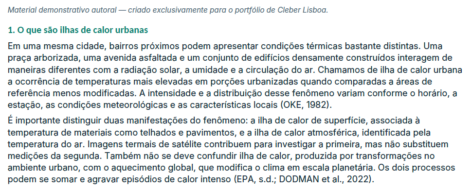
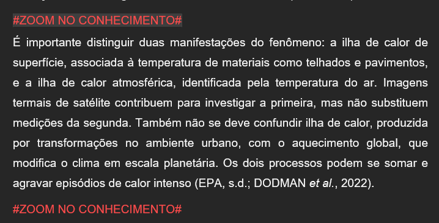
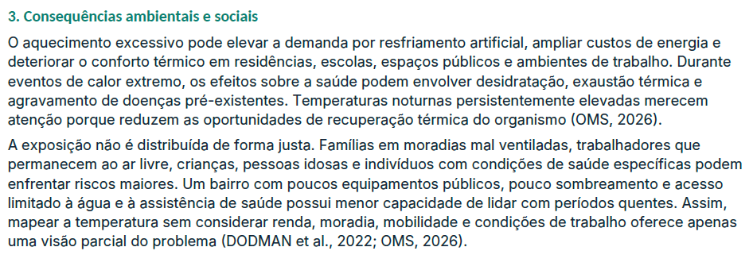
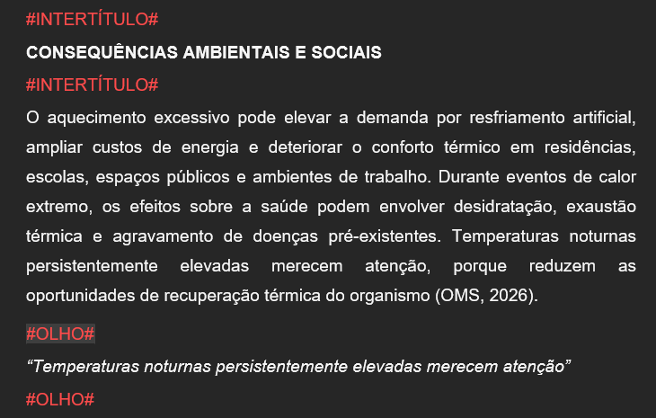
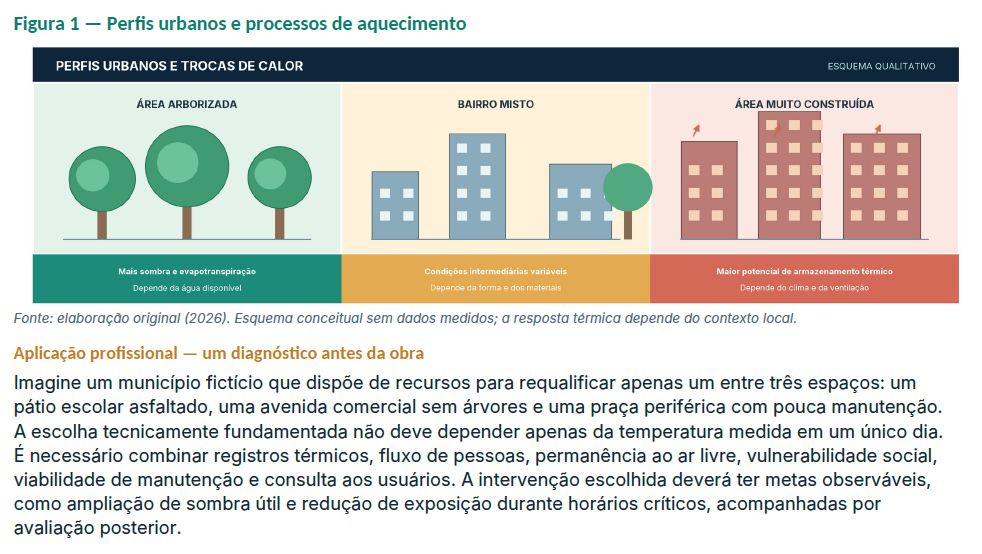
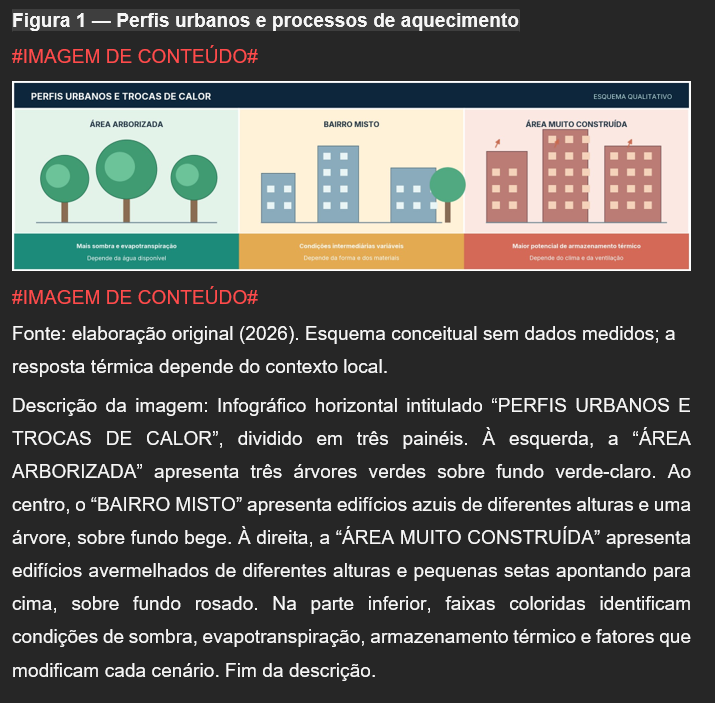
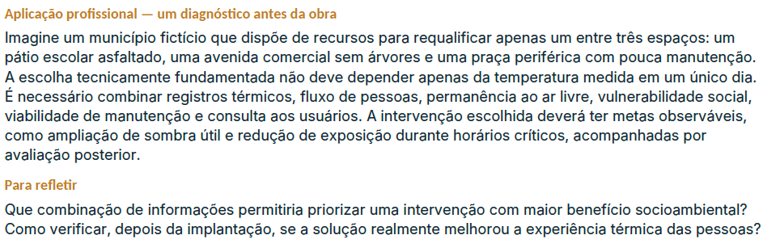
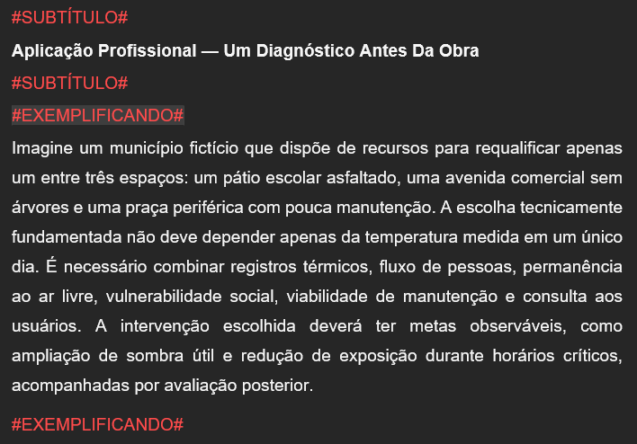
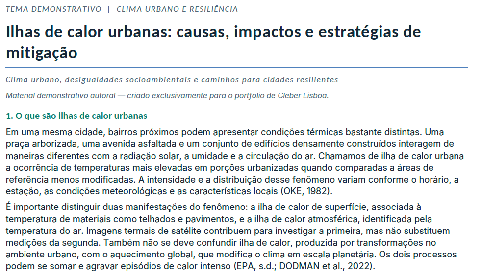
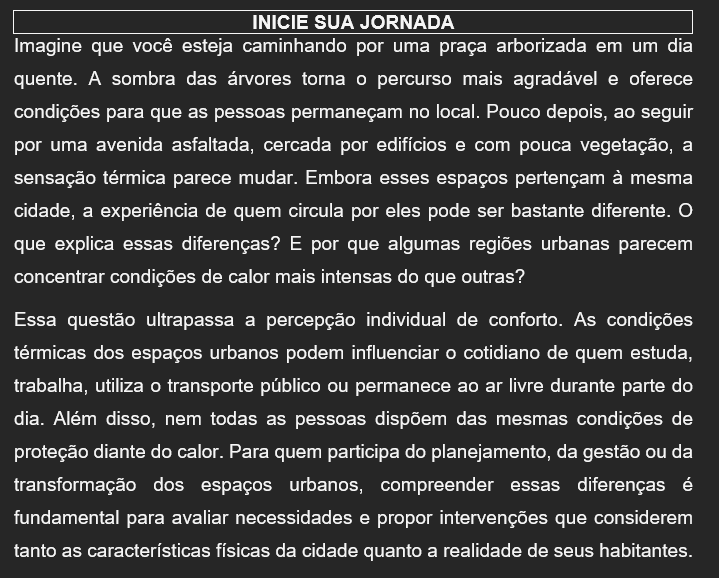

Transformar sem perder o que precisava permanecer intacto.
O ponto de partida eram livros didáticos completos, com autoria, sequência conceitual, citações, referências, imagens, figuras, quadros, tabelas, listas, fórmulas e uma arquitetura editorial própria. O novo modelo exigia reorganizar esse conteúdo em Temas de Aprendizagem sem permitir que a IA atuasse como autora livre.
Design do sistema, não apenas escrita de prompts.
Minha atuação combinou Design Educacional, arquitetura de prompts, definição de regras editoriais, testes com livros reais e refinamento contínuo. O objetivo era transformar uma tarefa aberta em um processo controlado, verificável e reutilizável.
Arquitetura do fluxo
Definição das etapas, responsabilidades, dependências e pontos de aprovação entre análise, transposição, recursos, consolidação e entrega.
Regras e fronteiras
Especificação do que a IA podia transformar, do que deveria preservar literalmente e das exceções editoriais autorizadas.
Testes e validação
Uso de materiais reais para identificar falhas, inconsistências e comportamentos indesejados antes de transformar cada problema em uma nova regra.
Integração pedagógica
Conexão do fluxo com recursos educacionais, curadoria visual, marcações editoriais e a geração opcional do documento final.
Um processo modular em vez de um prompt único.
A complexidade da tarefa levou à separação do trabalho em módulos especializados. Cada prompt executa uma função específica e recebe as regras necessárias para aquele estágio.
ao longo do fluxo
O Prompt Mestre funciona como camada normativa global e acompanha o fluxo com regras compartilhadas de preservação, hierarquia e limites de atuação.
Preservar primeiro. Transformar somente onde existe autorização.
Uma das decisões centrais foi deixar explícito que a IA não deveria “melhorar” livremente o material. Em partes sensíveis, como o Desenvolva seu Potencial, a literalidade, a integralidade e a sequência passaram a ser requisitos do sistema.
Preservar
- conteúdo-base e autoria;
- sequência conceitual;
- citações e referências;
- dados, fórmulas e estruturas;
- relações entre texto e elementos visuais.
Transformar quando autorizado
- mapa dos Temas de Aprendizagem;
- seções pedagógicas específicas;
- recursos educacionais;
- marcações editoriais;
- consolidação e apresentação final.
A IA executa etapas estruturadas. O Design Educacional decide.
O fluxo foi desenhado com portões de aprovação. A intenção não era receber um livro e retornar automaticamente um material final, mas criar uma colaboração controlada em que a IA amplia capacidade de análise e produção sem assumir a decisão pedagógica.
IA
Analisa o material, aplica regras, estrutura saídas, executa transformações autorizadas, organiza marcações e consolida etapas aprovadas.
Design Educacional
Define critérios, aprova fronteiras, avalia recomendações, solicita ajustes, resolve exceções e valida a versão que pode avançar para a etapa seguinte.
Falhas reais foram transformadas em requisitos.
O sistema amadureceu de forma iterativa: cada teste revelava comportamentos que precisavam de maior controle. Em vez de esconder os erros do processo, eles passaram a alimentar a arquitetura.
Preservação mais rigorosa
Os testes mostraram que dizer apenas “preserve o conteúdo” não bastava. A regra precisou detalhar operações proibidas, como resumir, parafrasear, reorganizar, completar ou retirar.
Elementos editoriais sincronizados
Figuras, Quadros e Tabelas ganharam regras próprias para renumeração e atualização coordenada de chamadas, títulos, legendas, descrições e marcações.
Ritmo entre recursos
A inserção consecutiva de recursos em bloco levou à criação de critérios de espaçamento editorial para preservar o fluxo de leitura.
Decisão mais recente do D.E.
O sistema passou a incorporar solicitações adicionais feitas após a primeira análise, mantendo a decisão humana como autoridade final dentro das regras institucionais.
Entrega mais prática
Além do DOCX opcional, o fluxo passou a poder apresentar as marcações finais prontas para copiar e colar quando isso fosse mais eficiente operacionalmente.
Do material-base ao Tema de Aprendizagem.
Para demonstrar o processo sem reproduzir conteúdos institucionais, esta seção utiliza o material autoral Ilhas de calor urbanas: causas, impactos e estratégias de mitigação, criado exclusivamente para o portfólio.
Conceito preservado e destacado para aprofundamento
Um trecho conceitual já presente no material-base é preservado e transformado em Zoom no Conhecimento, ganhando destaque e função de aprofundamento sem alterar a ideia original.


Ideia-chave ganha destaque editorial
Uma frase já existente no texto sobre consequências ambientais e sociais é selecionada como Olho. O destaque reforça uma ideia relevante sem criar ou reformular uma nova afirmação.


A figura passa a integrar conteúdo visual e acessibilidade
A figura autoral é preservada e, no Tema de Aprendizagem, recebe a marcação Imagem de Conteúdo, fonte e uma descrição acessível que explicita os elementos visuais relevantes para a aprendizagem.


Situação profissional vira recurso educacional
A situação aplicada Um diagnóstico antes da obra, já existente no material-base, é organizada no Word como recurso Exemplificando, tornando explícita sua função didática dentro do percurso.


De conteúdo expositivo a uma abertura dialógica
Os conceitos do material-base alimentam uma nova abertura para o Tema de Aprendizagem. O Inicie sua Jornada aproxima o assunto da experiência cotidiana e mobiliza perguntas antes do aprofundamento conceitual.


De comando improvisado a processo reutilizável.
O principal resultado foi a formalização de um fluxo complexo em uma arquitetura modular, com regras explícitas, validações humanas e possibilidade de reaplicação em diferentes livros e configurações de Temas de Aprendizagem.
Métricas quantitativas: tempo médio por TA, quantidade de livros testados e ciclos de refinamento serão incorporados quando o levantamento estiver consolidado.
Quanto mais complexo o processo, menos útil se torna um prompt único e genérico.
O desenvolvimento reforçou a importância da modularização, das fronteiras claras, das exceções controladas, da validação humana e dos testes com situações reais. A complexidade passou a ser tratada como arquitetura de processo — e não como um prompt cada vez maior.
“Não era necessário ensinar a IA apenas o que fazer. Era necessário projetar, com precisão, o que ela não poderia fazer.”